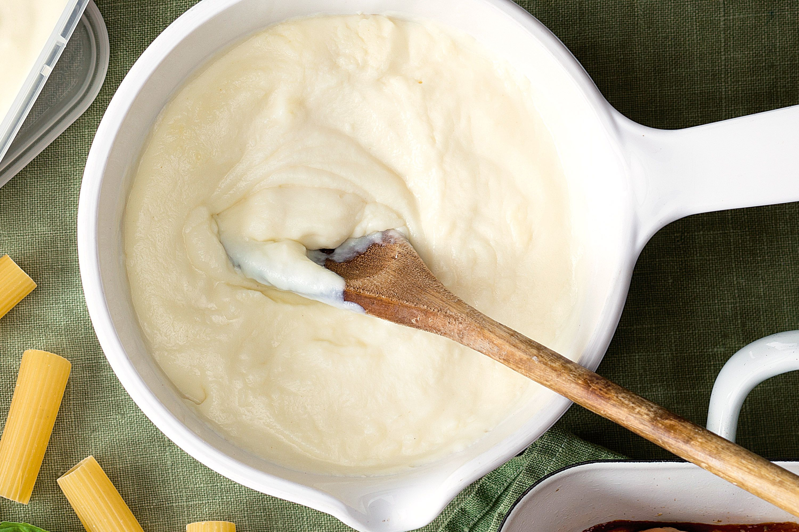

Bechamel Sauce

Description
This recipe is written as 'per cup' of whole millk used.
Multiply as required.
Also, I use the spices and cheese to taste. You do you, Boo.
Ingredients
- 1 cup whole milk
- 20g butter
- 12g Flour
- Cheese as required
- Salt and pepper
- Pinch nutmeg
- Mustard powder
Directions
- Butter in a pot on a medium heat. Stir for a minute to let the water evaporate.
- Add the flour and stir for a couple minutes. You need to cook the flour, otherwise the sauce will taste like this was the main ingredient.
- Add milk in portions. Continuously stir. Add more milk as it thickens.
- Season to taste.